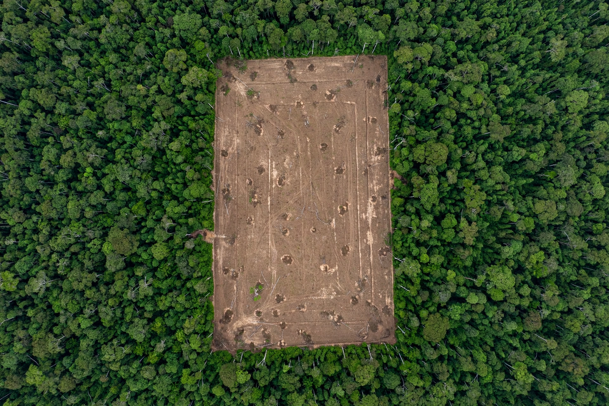
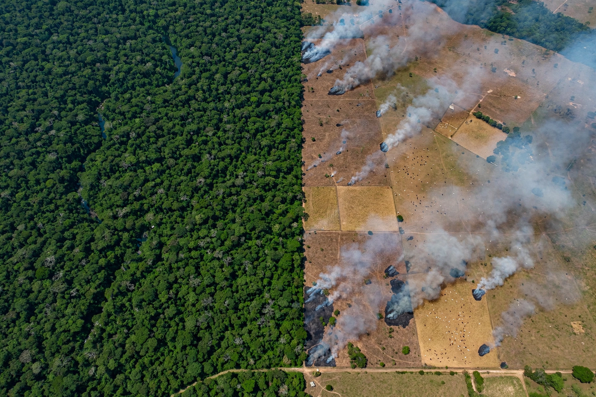

Deforestation


Deforestation is the conversion of forest to other land uses — farms, ranches, mines, plantations and cities — or its long-term degradation below ecological function. The world has lost roughly a third of its forest since the last ice age, and the great majority of current clearing is in the tropics.
Deforestation is a double climate problem: it releases the carbon stored in trees and soils, and it removes a living carbon sink. It is also the leading driver of terrestrial species extinction.
Drivers
Commercial agriculture dominates: cattle ranching and soy in Amazonia, oil palm in Indonesia and Malaysia, cocoa in West Africa. Subsistence farming, logging (legal and illegal), fuelwood and charcoal, mining and infrastructure each contribute, and fires — often set to clear land — escape into drought-stressed forests. Underlying causes include commodity prices, insecure land tenure, weak governance and demand from distant consumers.
Rates rose and fell with policy: Brazil cut Amazon deforestation dramatically in the 2000s with enforcement and protected areas, saw it climb again in the late 2010s, and reduced it again after 2022 — evidence that outcomes are chosen, not fated.
Consequences and responses
Beyond carbon and Biodiversity losses, deforestation alters rainfall downwind, erodes soils into rivers, and exposes people to new diseases. Responses include protected areas and Indigenous territories (which consistently show low deforestation), supply-chain commitments and import rules excluding deforestation-linked goods, satellite monitoring that makes clearing visible within days, and payments for forest carbon. Reforestation and natural regeneration can recover forest, though plantations are not ecological substitutes for old growth. See Rainforest and Conservation movement.
See also: Rainforest · Climate change · Biodiversity · Conservation movement · Carbon cycle